大阪と奈良の間に横たわる
生駒山系というのは関西の信仰シーンの中でもかなり特殊な場所といえよう。
信貴山、生駒聖天、石切劔箭神社などを挙げるまでもなく、
有象無象の民間信仰やインディーズ宗教がひしめいている信仰ホットスポットなのだ。
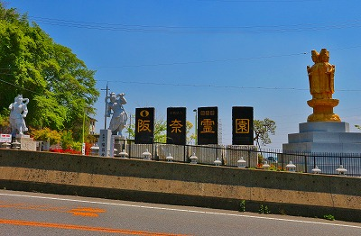
そんな生駒山系の北端は阪奈霊園や大阪生駒霊園、大阪メモリアルパークといった大規模な
霊園密集地域と化している。
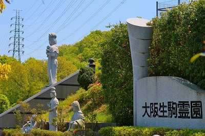
さらにニュータウンやゴルフ場も集中しており、いわゆる郊外3点セットがぎゅっと凝縮されたような所なのだ。
そんな場所をドライブしているとこんな光景に出くわす。
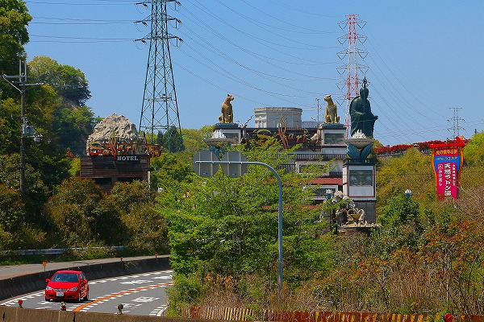
2匹のヒョウと弘法大師の競演。
あまりのシュールさに一瞬気を失いそうになる。
…いや、単にラブホの向こうに大弘法があるだけなんですけどね。
その大弘法を擁する寺は
龍眼寺。
生駒スカイラインのICのすぐ脇にあるサバービア感満点なお寺だ。
車がビュンビュン行きかうところだが、一歩境内に入ると静かな雰囲気。
巨大な弘法大師と大きなお地蔵さんがツープラトンでお出迎え。
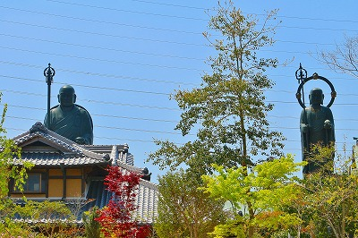
ただし、場所柄周辺には高圧鉄塔だらけ。
写真に鉄塔や電線がメチャ映りこんでいるが、コレはわざとじゃなくて本当に周りが鉄塔＆電線だらけなことを事前にお断りしておくぞ。
というわけで山門。
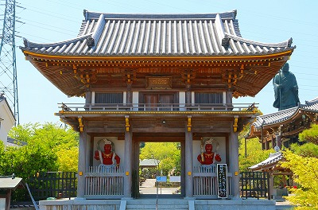
若干塗装の剥げた仁王様が左右を固めている。
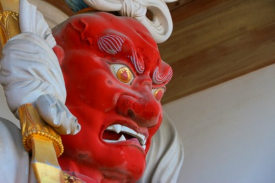
その先には六地蔵が並ぶ。
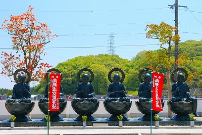
門をくぐるとそこには巨大な弘法大師がお待ちかね。
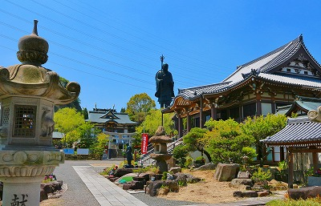
しかし、その手前に気になる人形が待ち受けているではないか。
西遊記。その向こうには金太郎。
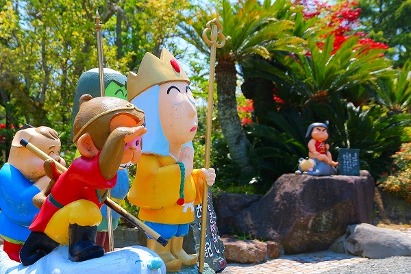
猿蟹合戦。
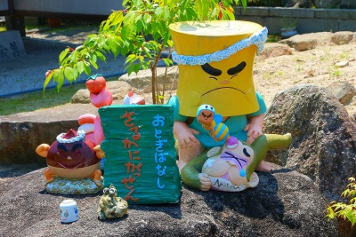
桃太郎。
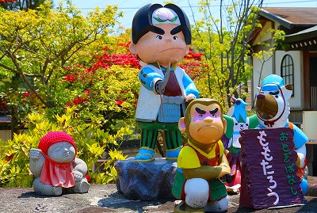
…の後ろには成敗された鬼まで。
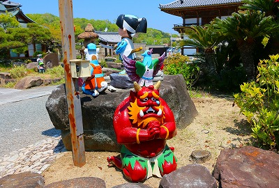
かようのごとき
昔話の登場人物の像が境内のあちこちに配置されているのだ。
小さな子供にも親しんでもらおう、というお寺サイドの意図なのだろう。
世代が下るにつれ信仰心が薄まる昨今、大変結構なことだと思う。
ただ、いかにも造形屋さんに外注したアニメっぽいキャラよりは多少下手でも手作りっぽさがあるともっと素敵かな、と思いましたよ。
…いや、実際には「多少」どころか「かなり」下手な方が当方の好みではあるのだが、それが一般的な趣向でないことは他の誰よりも自分自身がよ〜く判っているので、ここは敢えて
カワイイ！面白い！…という事にしておきます…。
…先に進みますよ。
大きな本堂の先には鳥居が建っており、その先には荒神堂が。
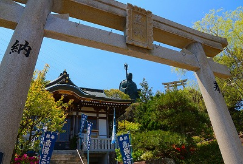
中にはこんな強烈な荒神サマがお待ちかね。
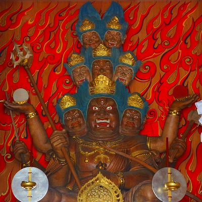
八臂荒神というそうな。
当サイトでもお馴染みである現代の大仏師、
松本明慶氏の作だとか。
…これもそうなんすかね？
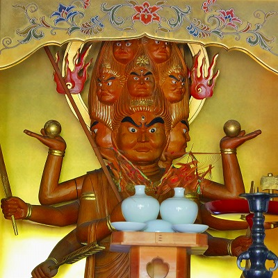
ヌルいアニキャラに慣れきったガキンチョには先ほどの昔話の人形とかじゃなくて、こちらの荒神サマの像を屋外に設置した方がインパクト強かったのではなかろうか？
…などと思ってしまうのだが、それが一般的な趣向でないことは他の誰よりも自分自身がよ〜く判ってます。
さらに境内の奥へ進むとようやく
巨大弘法大師が近くに見えてくる。
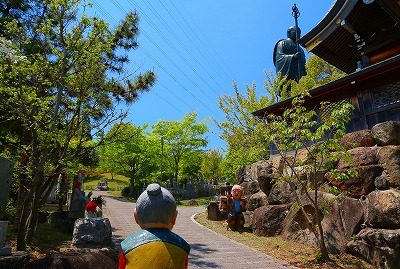
台座の上に立つ大師サマは
高さ17ｍ。右手に杓杖、左手に鉢を持った姿。
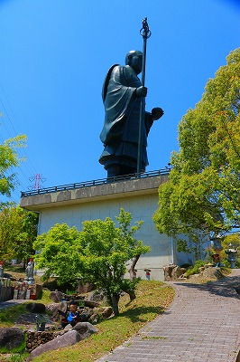
台座の上に立っている事も相まって相当大きく見える。
そんな大師サマの足元にもこんなお方が。一寸法師。
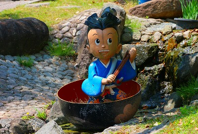
薪を背負った爺。
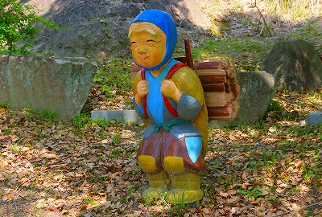
こちらは過剰生産により大量の在庫を抱えてしまって途方に暮れている爺。
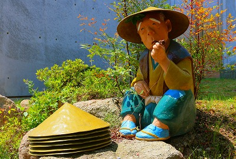
そんな余剰商品をお地蔵さんに無料配布することによって在庫の一掃を図る爺。
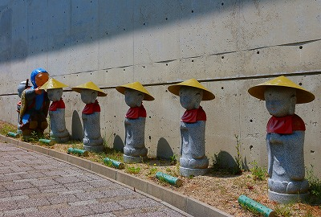
ところがデッドストック商品が天候の急変によって一躍ヒット商品に！
一夜にして数億円の利益を叩き出したのであった…。
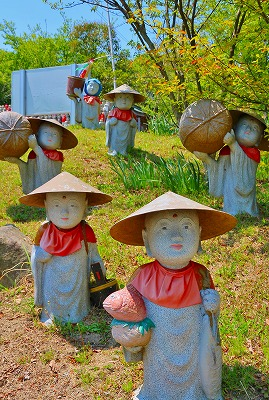
…という内容のビジネス書が原作だったと記憶しているが…違いましたっけ？
大弘法の足元には不動サマ、さらにその眷属の矜羯羅童子が。
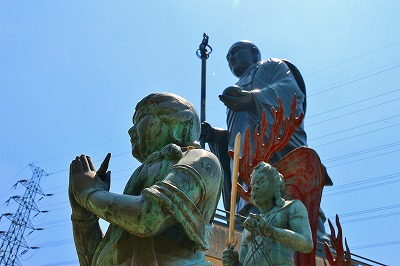
で、地蔵さま。こちらもサイズとしては中々のもの。
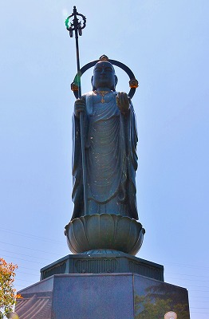
大弘法サマの後ろにあるのは大量の水子地蔵。
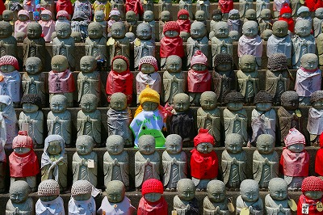
そしてその傍らにたたずむ授乳観音。
秩父の金昌寺の子育観音のレプリカであることは言うまでもない。
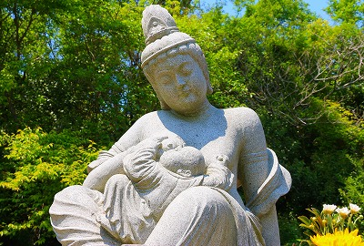
＆住職の墓地なのだろうか。土葬っぽかったけど…。
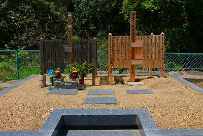
境内の片隅には
それまでとは毛色の違うコンクリ像が。
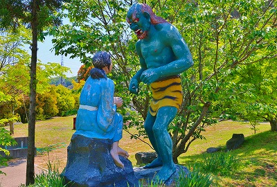
うおっ！回り込んでみてみれば
女性が鬼に舌を出しているではないか！
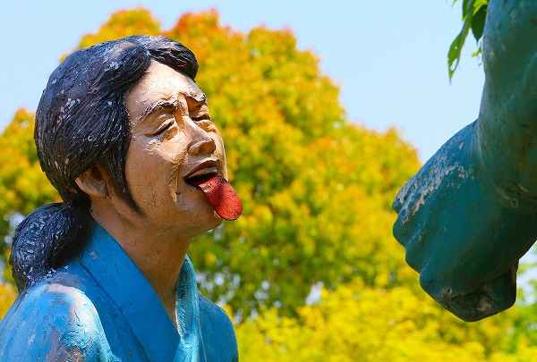
大仏ハンターで、
巨大仏巡礼という書籍を上梓された
クロスケさんのサイトを見てみたら
地獄八景亡者戯のいちシーンであるとの事。
上方落語では人気の演目で米朝や枝雀のそれが有名だが、はて、地獄八景にこんな面白いシーンあったっけ？
「さあ、お抜きなさい！」とばかりに鬼に舌を差し出しているのだろうか。
その顔は泣いているようでもあり、笑っているようでもある。
この表情だけから様々なストーリーを想像してしまう。それだけ秀逸な作品であるといえよう。
…いずれにせよ先ほどの何のひっかかりもないファンシーな人形とは一線を画した造形で、
この寺に点在している人形の中でも抜群に印象深いものであった。
さらに奥は四国八十八ヶ所の移し霊場。
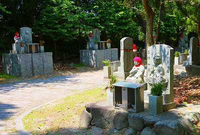
大量のお地蔵さんが並んでいたりしてチョット不気味。
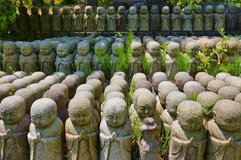
さらには橋のど真ん中を渡る一休さんの像も。
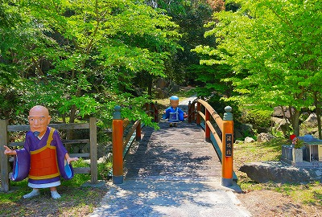
大作の花咲爺さん。
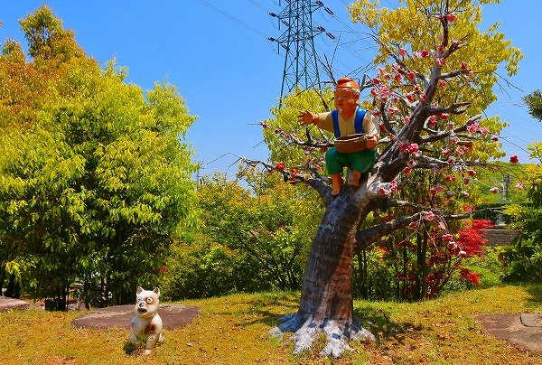
枯れ木に咲いた花が見事。
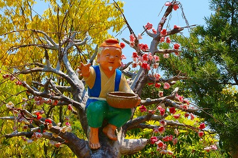
チビッ子に親しんでもらいたいという想いに満ちたお寺だった。
…と当たり障りなくまとめたところで、ここから本音的なことを言わせていただいていいですか？いいです？ハイ、ありがとうございます。
子供に親しんでいただくお寺、大変結構なことです。
ただ、このお寺にこの人形、似合ってないんだよねー。
民間信仰やインディーズ信仰が渦巻く生駒山系、そして霊園、ゴルフ場、ラブホに高圧鉄塔、自動車専用道などに囲まれている立地条件。
もうすでにこの条件だけでチビッ子を取り込もうということ自体が難しいお土地柄だと思うのですよ。
加えてブロンズの巨大な弘法大師と三宝荒神でしょ。
…普通に怖いって、子供。
いくらファンシーな人形並べても、この寺の難儀な感じはぬぐえないような気がしてならないのですよ。
あ、でもね。
誤解して欲しくないのはそれが悪いと言ってるわけじゃあないんです。
このちぐはぐさこそがこの寺の最大の特徴であり、ひいては現代社会における信仰の位相を象徴している部分だと思うのですよ。
大衆に迎合したい部分と信仰の本質を継承したい、およそ現代社会における宗教のジレンマ。
だからこそこの寺を昔話の人形が並ぶユニークなお寺です、的な単純な視点でしか評しないのはあまりにも失礼だと思うのですよ。